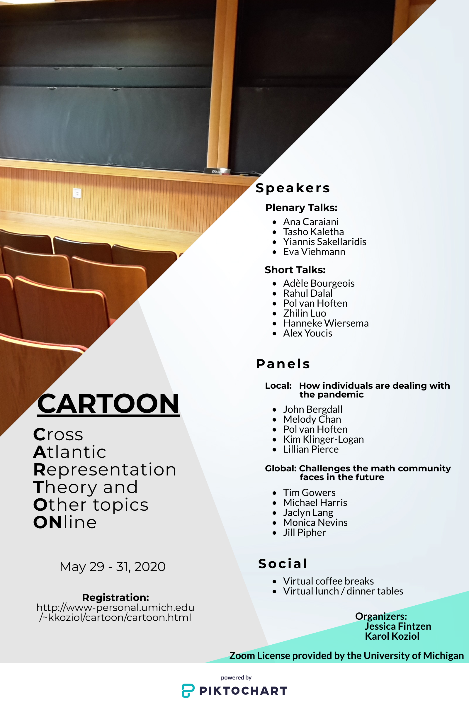

Cross Atlantic Representation
Theory and Other topics ONline
(CARTOON) conference
May 29 - 31, 2020
Speakers
- Ana Caraiani
- Tasho Kaletha
- Yiannis Sakellaridis
- Eva Viehmann
Short Talks - Adele Bourgeois
- Rahul Dalal
- Pol van Hoften
- Zhilin Luo
- Hanneke Wiersema
- Alex Youcis
Panels
"Local" panel: How individuals are
dealing with the pandemic
-
Melody Chan (moderator)
"Global" panel: Challenges the math community faces in the future
-
Monica Nevins (moderator)
Social
- Virtual coffee breaks
- Virtual lunch / dinner tables
Registration
Registration is free but required. Please follow the link below:
The application for short talks is now closed.
Schedule
Friday, May 29
|
Time (EDT)
(NYC time)
|
Time (GMT+1)
(London time)
|
Event |
Title |
Info |
| 10:00 - 10:30 |
3:00 - 3:30 |
Coffee |
See reminder email (sent out at 9:30 EDT / 2:30 GMT+1) |
|
| 10:30 |
3:30 |
Welcoming remarks | |
|
| 10:30 - 11:30 |
3:30 - 4:30 |
Ana Caraiani |
Vanishing theorems for the cohomology of Shimura
varieties
|
Abstract, Slides, Video |
| 11:30 - 12:00 |
4:30 - 5:00 |
More Coffee |
See reminder email | |
| 12:00 - 12:20 |
5:00 - 5:20 |
Adele Bourgeois |
Restricting Representations via Restricting G-data
and Kim-Yu Types |
Abstract, Slides, Video |
| 12:30 - 12:50 |
5:30 - 5:50 |
Zhilin Luo |
On the stable transfer for Symn Lifting
of GL2: Archimedean case |
Abstract, Slides, Video |
| 1:00 - 2:00 |
6:00 - 7:00 |
Lunch / Dinner |
See reminder email | |
| 2:00 - 3:00 |
7:00 - 8:00 |
Local Panel | How individuals are dealing with the pandemic |
|
| 3:00 - |
8:00 - |
Free discussions |
|
Time (EDT)
(NYC time)
|
Time (GMT+1)
(London time)
|
Event |
Title |
Info |
| 10:00 - 10:30 |
3:00 - 3:30 |
Coffee |
See reminder email | |
| 10:30 - 11:30 |
3:30 - 4:30 |
Yiannis Sakellaridis |
Intersection cohomology & L-functions | Abstract, Notes, Video |
| 11:30 - 12:00 |
4:30 - 5:00 |
More Coffee |
See reminder email | |
| 12:00 - 12:20 |
5:00 - 5:20 |
Pol van Hoften |
Mod p points on Shimura varieties of
parahoric level |
Abstract, Slides |
| 12:30 - 12:50 |
5:30 - 5:50 |
Rahul Dalal |
Statistics of Automorphic Representations through
Simplified Trace Formulas |
Abstract, Slides, Video |
| 1:00 - 2:00 |
6:00 - 7:00 |
Lunch / Dinner |
See reminder email | |
| 2:00 - 3:00 |
7:00 - 8:00 |
Global Panel | Challenges the math community faces in the future |
|
| 3:00 - |
8:00 - |
Free discussions |
|
Time (EDT)
(NYC time)
|
Time (GMT+1)
(London time)
|
Event |
Title |
Info |
| 10:00 - 10:30 |
3:00 - 3:30 |
Coffee |
See reminder email | |
| 10:30 - 11:30 |
3:30 - 4:30 |
Eva Viehmann |
Newton strata in the weakly admissible locus |
Abstract, Notes |
| 11:30 - 12:00 |
4:30 - 5:00 |
More Coffee |
See reminder email | |
| 12:00 - 12:20 |
5:00 - 5:20 |
Alex Youcis |
An approach to characterizing the local
Langlands conjecture over p-adic fields |
Abstract, Slides, Video |
| 12:30 - 12:50 |
5:30 - 5:50 |
Hanneke Wiersema |
Serre's conjecture and two notions of minimal
weight |
Abstract, Slides |
| 1:00 - 2:00 |
6:00 - 7:00 |
Lunch / Dinner |
See reminder email | |
| 2:00 - 3:00 |
7:00 - 8:00 |
Tasho Kaletha |
A twisted Yu construction and Harish-Chandra
characters |
Abstract, Slides, Video |
| 3:00 - |
8:00 - |
Farewell discussion |
Group photo at
3:15 / 8:15! |
See Google doc |
Suggestions for coffee breaks
- Please remember to be respectful of everyone participating!
- Turn your video on and use the same name that you use in your professional work.
- Do your best to introduce yourself to participants entering the coffee / lunch / dinner table you're in.
- In order to encourage interaction, we recommend that the sizes of the coffee tables be limited to around 10 people. In case more people arrive, consider creating a new zoom meeting, or asking the host to create a breakout room.
Code of Conduct
To foster a safe,
collegial and productive conference environment, every
participant must display online the name that they use
in their professional work. Bullying or harassment of
other participants will not be tolerated. In the event
that you witness or experience inappropriate behavior
please consider intervening and / or inform the
organizers.
Note that the organizers reserve the right to remove
anyone from the event.
Poster
